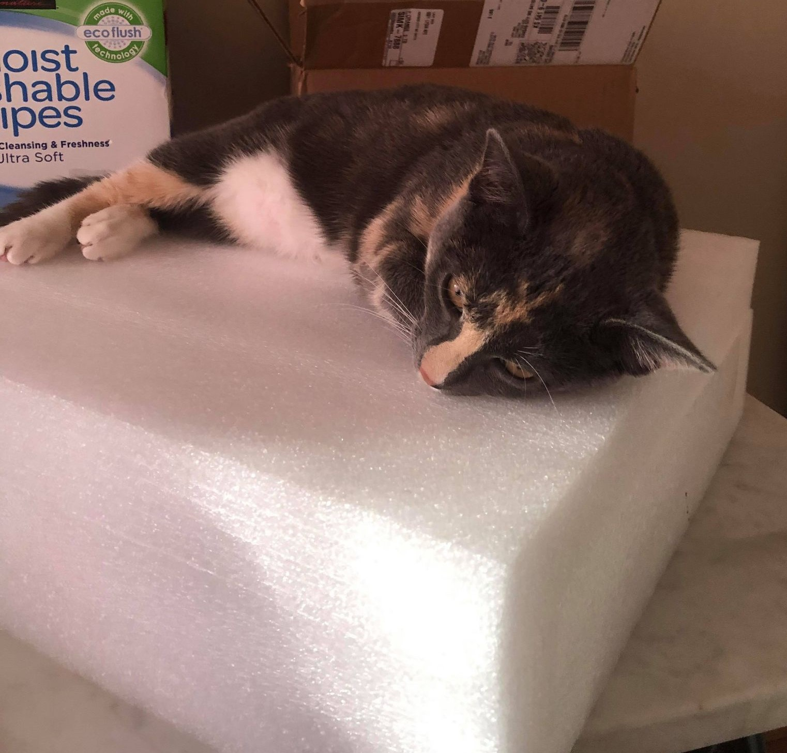

Cats are low maintenance
From my experience who lived with a dog one year ago and is having a cat right now, the total cost for a cat is two times cheaper than a dog.
Moreover, the time you spend on a cat is half of your time on a dog.
When I lived with my host's dog, I ought to open the door for her every two hours per day for her to play outside and go poop.
In contrast, my cat is very smart and independent. She knows where she goes to take a dump, and where she eats.
My job is only to fill her food and clean her toilet at the end of the day when I come home from my school.
Cats are quiet
Cats tend to meow when they’re hungry, but I rarely have to worry about being woken up or distracted from a task by a cat begging for attention.
This makes them an ideal pet for me because I am a college student.

Cats help lower stress and anxiety
I am an international student and it has been two years since the last time I came home, so I have been feeling lonely and sometimes stressed and anxious.
Four months ago, I met my cat by accident, and after a short time discussing with my host, I was allowed to take care of her in my room.
Since that time, playing with my cat, Chianti has helps me reduce my stress and turn a lot of my bad days into a good ones.